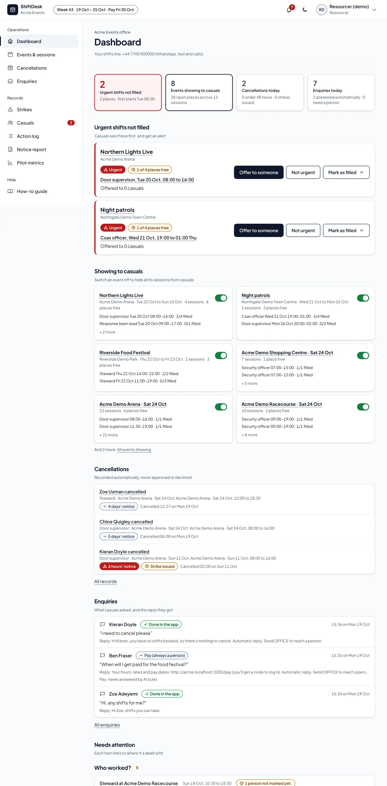

acme-events.example/office

STEP 01
An urgent gap
The office opens the dashboard. Urgent shifts that aren't filled sit at the top, in red, each with Offer to someone beside it. Four counts above them: urgent gaps, events showing to casuals, cancellations today and enquiries today.
Behind itA shift is urgent when it starts soon or after a dropout. Urgent
shifts show first to the casuals who can take them, and their messages go even at
night unless the firm turns that off.